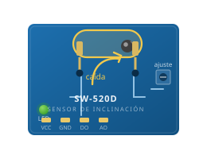
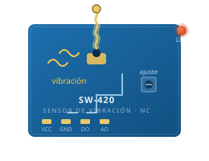
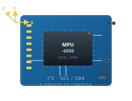

Degradación silenciosa
Deformaciones progresivas, vibraciones fuera de lo esperado y esfuerzos no contemplados se desarrollan sin manifestación visible inmediata. Cuando aparece la grieta, el proceso ya lleva tiempo corriendo.
InnovaTecNM 2026 · Folio 68283-17 · ITCH II
La inteligencia que protege estructuras antes del desastre.
Un sistema de monitoreo de salud estructural que instrumenta puentes con sensores de bajo costo que vigilan vibración, inclinación y caída en tiempo real. No dice «algo pasa»: detecta y localiza el daño antes de que sea visible.
01 · El problema
La supervisión estructural en México sigue dependiendo, en lo esencial, de inspecciones periódicas y evaluación visual. Es una práctica profesional necesaria, pero tiene un límite físico: no puede ver lo que todavía no se ve.
Deformaciones progresivas, vibraciones fuera de lo esperado y esfuerzos no contemplados se desarrollan sin manifestación visible inmediata. Cuando aparece la grieta, el proceso ya lleva tiempo corriendo.
Al terminar la etapa constructiva desaparece el seguimiento. Se pierde el conocimiento del comportamiento real de la estructura justo cuando empieza su vida útil, que puede durar décadas.
Sobrecostos, intervenciones correctivas complejas, fallas prematuras y riesgo para la integridad de las personas. El mantenimiento reactivo siempre es más caro que el preventivo.
El planteamiento no es sustituir al inspector. Es darle un instrumento que vea lo que el ojo no alcanza, y llegar a la inspección con una hipótesis en la mano en vez de una hoja en blanco.
02 · El criterio físico
Toda la propuesta descansa sobre una relación de física elemental. Es lo que separa un sensor con chicharra de un sistema de diagnóstico.
La frecuencia natural de vibración f de una estructura depende de su rigidez k y su masa m.
Cuando un elemento se agrieta, se afloja o se corroe, la rigidez k baja. La masa m prácticamente no cambia. Por lo tanto la frecuencia natural baja de forma medible, muchas veces antes de que exista daño visible a simple vista.
El paso 5 es la diferencia entre una alarma y un diagnóstico. No dice «algo pasa»: dice «la diagonal D4 perdió rigidez aproximadamente un 22 por ciento».
Acelerómetros MEMS y celdas de carga muestreando a frecuencia estable, con temporizador de hardware.
FFT a bordo del ESP32 en ventanas de 1024 muestras con ventaneo de Hanning. Sin depender de la nube.
Contraste contra una línea base compensada por temperatura, con umbrales estadísticos de 2σ y 3σ.
Calibración inversa del modelo y coloreado del elemento afectado sobre la representación tridimensional.
03 · Demostración interactiva
Esta es la demostración que el equipo lleva ante el jurado, reproducida en el navegador. Mueva la rigidez de cualquier diagonal, cambie la temperatura ambiente y observe cómo el sistema distingue una cosa de la otra. Pruebe también a apagar la compensación térmica: verá por qué el sensor de temperatura no es un accesorio.
Retire D4 y luego D2. El corrimiento de frecuencia es parecido, pero la firma entre los cuatro modos es distinta, y por eso el sistema sabe cuál fue.
Deje la estructura sana, apague la compensación térmica y suba la temperatura a 40 °C. El sistema alertará daño donde solo hay calor. Vuelva a encenderla.
Use el escenario D3 + D6, con daño simultáneo en dos zonas. Con cuatro modos y ocho elementos la solución inversa no es única: la confianza baja y el sistema lo declara en lugar de fingir certeza.
04 · Sensores
El prototipo integra tres módulos dedicados: uno para inclinación y caída, otro para vibración súbita o trepidación, y una unidad inercial de seis grados de libertad para el monitoreo vibratorio completo. Juntos cubren los dos movimientos que interesan a la estructura: el lento —desplome, inclinación, pérdida de aplomo— y el rápido —vibración natural, impactos y golpes—.

Inclinación y caídaCómo funciona: en su interior hay una cápsula con una esfera de metal libre. Cuando el módulo se inclina más allá de un ángulo de umbral, la esfera rueda, cierra el circuito y cambia la salida digital DO. Un potenciómetro ajusta la sensibilidad del disparo.
Qué aporta: detecta de inmediato una diagonal que se afloja y cuelga, un apoyo que cede o el inicio de un desplome, aunque la vibración no haya cambiado todavía. Es la red de seguridad del nodo.

Vibración súbitaCómo funciona: un resorte metálico descansa sobre un contacto que normalmente está cerrado (NC). Cuando el módulo recibe una vibración o un golpe, el resorte tiembla, abre y cierra el contacto y genera pulsos en la salida DO, contables y medibles por el microcontrolador.
Qué aporta: registra las trepidaciones súbitas —un impacto, la caída de un elemento, un evento de tráfico pesado— que anteceden o acompañan a un daño. Sirve de disparo para guardar la lectura del MPU-6050 en el instante crítico.

6 grados de libertadCómo funciona: combina en un solo chip un acelerómetro MEMS de tres ejes y un giróscopo de tres ejes: seis grados de libertad. El microcontrolador los lee por I²C y fusiona ambas señales para obtener aceleración lineal, velocidad angular y orientación en tiempo real.
Qué aporta: es la fuente principal de la medida vibratoria: con la aceleración muestreada a frecuencia estable se calcula la FFT y se obtiene la frecuencia natural del primer modo, la magnitud que baja al fallar un elemento. El giróscopo refuerza la detección de giros e inclinación instantánea.
05 · Prototipo físico
Las tres opciones son viables. Difieren en ambición, riesgo y en cuánto capital técnico demuestran.
Maqueta de puente tipo armadura, de 80 a 120 cm de claro, instrumentada con un nodo ESP32. El nodo muestrea vibración, calcula la FFT a bordo, identifica la frecuencia del primer modo y la compara con una línea base compensada por temperatura. Un elemento diagonal va atornillado en lugar de pegado, para aflojarlo frente al jurado y provocar daño real, medible y reversible.
Qué demuestra: que el sistema mide una propiedad física de la estructura, no un umbral arbitrario; que hay un indicador cuantitativo de daño; que el procesamiento ocurre en el borde.
Debilidad: es un buen proyecto de instrumentación, pero no explota el paso de diagnóstico. Y es, probablemente, lo que harán varios equipos.
Demo en vivo repetible: sí
Todo lo de la opción A, más la mitad que la convierte en diagnóstico: identificar qué elemento cambió. Un modelo estructural de la maqueta corre en Python y predice las frecuencias naturales. Al recibir las frecuencias medidas, un algoritmo de calibración ajusta los factores de rigidez de cada grupo de elementos hasta hacer coincidir el modelo con la medición. El resultado se pinta sobre un modelo tridimensional en el navegador: los elementos con pérdida estimada se colorean, con su porcentaje.
Cuando alguien afloja la diagonal, el tablero no dice «alerta». Dice: rigidez de la diagonal D4 estimada en 78 por ciento del valor de referencia, confianza media. Y colorea esa barra.
Qué demuestra: el ciclo cerrado completo —físico, sensor, modelo, diagnóstico, visualización—. Localización del daño, no solo detección.
Plan B: si la calibración automática no converge, se sustituye por comparación contra un catálogo de firmas espectrales precalculadas. Resuelve el mismo problema, es robusto y sigue siendo diagnóstico. Se presenta sin disculpas.
Aprovecha el perfil del equipo: completo. Arquitectura produce el modelo tridimensional y la visualización; Ciberseguridad se encarga del canal de datos, la autenticación de los nodos y la integridad del registro histórico; Gestión Empresarial toma el modelo de negocio del activo de información.
Aprovecha algo que ya está en el Canvas y que nadie más va a llevar: sensores embebidos en concreto. Se cuelan dos o tres probetas con instrumentación adentro, encapsulada. Se cargan progresivamente hasta el agrietamiento mientras el sistema registra deformación, temperatura de fraguado y respuesta vibratoria. Se muestra la firma del dato en el momento en que aparece la primera microfisura.
Qué demuestra: encapsulado, supervivencia del sensor en ambiente alcalino y húmedo, monitoreo desde el fraguado. Es el argumento más fuerte de la propuesta original y el más difícil de imitar.
Riesgo logístico alto: requiere laboratorio de materiales, prensa de compresión, tiempo de curado (28 días para resistencia nominal) y ensayos destructivos que no se repiten frente al jurado.
Recomendación: no como prototipo principal, sino como evidencia complementaria. Una probeta agrietada sobre la mesa, con la gráfica del instante exacto de la fisura y un video del ensayo, es una de las piezas más persuasivas que pueden llevar.
Demo en vivo repetible: no
La opción B contiene íntegramente a la A, así que la ruta de construcción es incremental y siempre hay algo funcional que mostrar. Si el tiempo se acaba, se presenta la A y se explica la calibración como trabajo en curso, con el modelo ya en pantalla. No hay escenario en que el equipo se quede sin nada.
Además: la opción A ya es el promedio del certamen; la B cierra el hueco del criterio de diagnóstico; y usa a las cinco integrantes en lo que cada una sabe hacer.
06 · Ruta de construcción
Las fases se paralelizan entre las integrantes. Haga clic en cada una para ver el detalle y quién la sostiene.
Tipología Pratt o Warren de siete a nueve paneles: simétrica, fácil de analizar, con diagonales claramente identificables para la narrativa de localización. Claro libre de 80 a 120 cm, altura de aproximadamente un octavo del claro, un apoyo fijo y uno móvil.
Decisión crítica: al menos dos diagonales deben ser atornilladas y desmontables, no pegadas. Sin eso no hay demostración posible. Conviene que estén en posiciones distintas —una cerca del apoyo y otra cerca del centro— para poder mostrar que el sistema distingue dónde ocurrió el daño.
El despiece se numera desde el principio y esa numeración ya no se cambia: es la que aparecerá en el tablero.
Antes de cortar aluminio, calcular. Modelar la armadura y obtener las primeras tres frecuencias naturales predichas. Herramientas accesibles: Ftool para verificación rápida en 2D, Frame3DD u OpenSees para análisis modal, o una implementación propia de elemento finito de barra en Python.
Construir el nodo por bloques, probando cada uno antes de integrar.
delay(). Es el error más común en proyectos de este tipo. Objetivo: 500 a 1000 Hz, verificado contando muestras reales por segundo.arduinoFFT, ventanas de 1024 muestras, ventaneo de Hanning. Identificar el pico dominante y los dos siguientes.Mosquitto para MQTT, InfluxDB para series de tiempo y Grafana para las gráficas, sobre Raspberry Pi o laptop. Alternativa ligera: un solo servicio en Python con FastAPI y SQLite, con frontend propio.
Requisito no negociable: el sistema debe funcionar sin internet. En el recinto la red va a estar saturada. Router propio, todo en red local.
Aquí el perfil de Ciberseguridad agrega lo que casi ningún equipo tendrá: autenticación de nodos para que nadie inyecte lecturas falsas, cifrado del canal y registro histórico con verificación de integridad. En infraestructura crítica, un sistema de monitoreo falsificable es peor que no tener monitoreo, porque produce confianza injustificada.
La fase más aburrida y la más importante. Dejar la maqueta sana midiendo al menos 48 horas continuas, excitándola de forma repetible: martillo de nylon en un punto marcado, o un motor con masa excéntrica en el tablero.
Con esos datos se calcula, para cada modo, la media y la desviación estándar de la frecuencia, y la relación entre frecuencia y temperatura. De ahí salen los umbrales:
Exigir persistencia antes de disparar el rojo es lo que reduce las falsas alarmas.
El paso que convierte el proyecto en un sistema de diagnóstico. Una rutina recibe las frecuencias medidas y busca los factores de rigidez por grupo de elementos que minimizan el error entre modelo y medición. Con una armadura pequeña, una optimización sencilla basta.
Plan B, a decidir en la semana 7: si la calibración no converge de forma confiable, sustituirla por comparación de firmas. Se precalcula el vector de frecuencias para cada escenario de daño, se guarda como catálogo, y el sistema clasifica la medición asignándola al escenario más cercano.
Modelo tridimensional de la maqueta exportado a glTF y visualizado en el navegador con Three.js. Cada barra coloreada según su factor de rigidez estimado, con un panel lateral de elementos y porcentajes.
Esta es la pieza que la gente recuerda: un puente en pantalla donde una barra se pone roja en el mismo momento en que alguien aflojó un tornillo en la mesa.
Ejecutar el protocolo completo de validación, documentar todo, grabar el video de respaldo y ensayar la presentación al menos cinco veces completas, incluyendo el escenario en que algo falla.
07 · Validación
Con protocolo, es un instrumento. Seis pruebas, cada una respondiendo a una pregunta que el jurado va a hacer.
Medir la vibración simultáneamente con el nodo ESP32 y con una referencia independiente —Phyphox, de la RWTH Aachen, expone los sensores del teléfono y exporta datos crudos—. Reportar error absoluto y relativo en al menos diez repeticiones.
Veinte mediciones consecutivas de la estructura sana sin tocar nada. Media, desviación estándar y coeficiente de variación del primer modo. Este número define la resolución real: no se puede detectar un cambio menor que el propio ruido.
Comparar las frecuencias predichas con las medidas. Es normal que difieran entre 5 y 20 % en una maqueta atornillada, porque el modelo idealiza los nodos. Explicar esa diferencia y usarla para calibrar es el proyecto, no un error del proyecto.
El experimento estrella. Daño progresivo en cinco niveles, del cuarto de vuelta al retiro completo. El nivel 4 —retirar D2 en lugar de D4— es el que demuestra localización. De aquí sale el umbral mínimo de daño detectable.
Medir a distintas temperaturas aprovechando el ciclo día-noche. Graficar frecuencia contra temperatura y ajustar una recta: esa recta es la compensación térmica. Sin ella, un cambio de temperatura se confunde con daño.
Veinticuatro horas sobre la estructura sana con perturbaciones que no son daño: golpes en la mesa, gente cerca, corrientes de aire. Un sistema con tasa de falsas alarmas conocida y baja es un producto; uno cuya tasa nadie midió es una promesa.
| Nivel | Condición | Δf esperado | Qué demuestra |
|---|---|---|---|
| 0 | Sana, todos los tornillos con par nominal | 0 | Línea base |
| 1 | Diagonal D4 aflojada un cuarto de vuelta | Pequeño | Umbral de detección |
| 2 | Diagonal D4 aflojada una vuelta completa | Moderado | Progresión monótona |
| 3 | Diagonal D4 retirada | Grande | Respuesta ante daño severo |
| 4 | Diagonal D2 retirada, D4 restituida | Grande, firma distinta | Localización — demostrado |
Los cinco escenarios están reproducidos en el simulador de esta página como escenarios preconfigurados.
08 · Modelo de negocio
Un sistema de telemetría es reemplazable por otro más barato. Un sistema de monitoreo calibrado con cinco años de historia de ese puente específico no lo es, porque el valor está en los datos acumulados y en el modelo ya ajustado. Eso es retención de cliente real, y sostiene el modelo de suscripción.
| Propuesta como telemetría | Propuesta como sistema de diagnóstico |
|---|---|
| Sensores que detectan anomalías y generan alertas | Un modelo estructural vivo del puente, calibrado con datos reales y actualizado de forma continua |
| Vende hardware más una suscripción | Vende un activo de información que gana valor con cada año de datos acumulados |
| Compite por precio de instrumentación | Compite por capacidad de diagnóstico e integración con la gestión de activos |
| Difícil de diferenciar de otros proyectos con sensores | Se conecta con BIM, Industria 4.0 y gestión de infraestructura basada en datos |
Sensores, DAQ, cableado, configuración inicial y puesta en operación. Esquema modular y escalable según la dimensión de la obra.
Ingreso recurrente por monitoreo, almacenamiento de datos y generación de alertas. Es el núcleo del modelo.
Asesoría técnica personalizada, soporte, mantenimiento, actualizaciones y capacitación de usuarios.
Análisis predictivo basado en la historia acumulada de cada estructura instrumentada.
Proveedores de sensores, empresas de software, constructoras y desarrolladoras, instituciones académicas, dependencias de gobierno, ingenieros estructuristas.
Desarrollo de software, instalación en obra, monitoreo y análisis, generación de alertas, mantenimiento del sistema, capacitación.
Detección temprana y localización de fallas. Monitoreo continuo durante y después de la construcción. Sensores embebidos temporales y permanentes. Decisiones basadas en datos. Solución escalable.
Asesoría técnica personalizada, acompañamiento en instalación, soporte y mantenimiento, capacitación en el uso del software.
Constructoras de obra civil, desarrolladoras urbanas, dependencias gubernamentales, ingenieros y supervisores, operadores de infraestructura crítica.
Sensores estructurales, software de monitoreo y análisis, equipo técnico especializado, conocimiento en ingeniería estructural, y el histórico de datos de cada estructura instrumentada.
Licitaciones y obra pública, contacto directo con constructoras, plataformas digitales y redes profesionales, alianzas con despachos de ingeniería.
Costes: desarrollo de software, hardware, instalación en obra, personal técnico, mantenimiento, I+D. Ingresos: venta del sistema, instalación, licencias, soporte, actualizaciones y monitoreo continuo.
Con el crecimiento de las ciudades y la necesidad de infraestructura más segura, el monitoreo preventivo se vuelve una necesidad clave.
Puentes y pasos vehiculares
Dependencias de gobierno y obra pública
Constructoras y desarrolladoras
Hospitales y escuelas
Centros comerciales
Naves industriales
Edificios inteligentes
Operadores de infraestructura crítica
09 · Contexto mexicano
El Sistema de Puentes de México es el inventario oficial de los puentes de la red carretera federal. Registra cada estructura y le asigna una calificación de estado de conservación que se usa para priorizar recursos de mantenimiento y rehabilitación.
Es el mejor anclaje para VIGÍA por dos razones. Primero, porque esa calificación proviene fundamentalmente de inspección visual periódica, con las limitaciones ya descritas. Segundo, porque un dato de monitoreo continuo alimentando esa calificación no compite con el sistema existente: lo complementa y lo hace más objetivo.
Es una historia de adopción mucho más realista que pretender reemplazar el proceso oficial. El inventario federal comprende varios miles de estructuras, buena parte construidas hace décadas y con cargas de tránsito muy superiores a las de su diseño original. Instrumentarlas todas con equipo comercial es económicamente imposible: ahí está el hueco que ocupa un nodo de bajo costo.
México tiene casos documentados de falla estructural en infraestructura de transporte que dan pertinencia al proyecto. El colapso del tramo elevado de la Línea 12 del Metro de la Ciudad de México, en mayo de 2021, motivó peritajes independientes que apuntaron a deficiencias constructivas en la conexión entre losa y trabes metálicas, particularmente en los pernos de cortante. El socavón del Paso Exprés de Cuernavaca, en 2017, es otro antecedente conocido.
Estos casos se tratan con respeto y precisión, no como recurso dramático. El planteamiento correcto es técnico: en ambos hubo procesos de degradación progresiva que un sistema de monitoreo continuo tenía posibilidad de haber hecho visibles antes del colapso.
Y con honestidad sobre el alcance: no se puede afirmar que VIGÍA habría evitado esas tragedias. Sí se puede afirmar, con fundamento, que la degradación progresiva de rigidez es detectable por medios instrumentales antes de que sea visible, y que la inspección visual periódica no está diseñada para captarla.
| Referencia | Alcance | Uso en el proyecto |
|---|---|---|
| ISO 4866 | Vibración de estructuras fijas: medición de vibraciones y evaluación de sus efectos | Justifica el método de medición y la ubicación de los acelerómetros |
| Normas N-PRY-CAR | Proyecto de carreteras, incluye estructuras y puentes | Marco de diseño nacional aplicable |
| AASHTO LRFD Bridge Design Specifications | Especificación internacional de diseño de puentes | Contexto de estados límite y cargas |
| Normas Técnicas Complementarias | Diseño estructural local, reglamento de construcciones aplicable | Marco reglamentario en obra urbana |
Las referencias normativas y las cifras de los casos de campo deben verificarse en fuente primaria antes de citarse en público. Es una regla que el propio dossier del proyecto se impone.
10 · Equipo
Tres integrantes de Arquitectura, una de Gestión Empresarial y una de Ciberseguridad. Esa mezcla es justamente la de un equipo de monitoreo estructural: quien entiende la estructura y su representación tridimensional, quien construye el caso de negocio, y quien asegura la integridad y el resguardo de los datos. El valor de VIGÍA no está en el circuito: está en la interpretación estructural del dato y en la plataforma que lo entrega.
Héctor Ramón Flores Bernal
hector.fb@chihuahua2.tecnm.mx
José Antonio García Escudero
jose.ge@chihuahua2.tecnm.mx
Diseño y fabricación de la armadura, modelo estructural y predicción modal, motor de calibración, visualización tridimensional.
Firmware del nodo, canal de datos, autenticación de nodos, cifrado y verificación de integridad del registro histórico.
Modelo de negocio del activo de información, estructura de costos, canales y ruta de adopción.
11 · Documentación
Material entregado en la etapa local y dossier técnico de preparación para la etapa estatal.
| Riesgo | Preparación |
|---|---|
| No hay red en el recinto | Router propio, todo en red local, nada depende de internet |
| Se quema un componente | Nodo de repuesto ya armado y probado, en la caja |
| El tablero no carga | Video de respaldo de la demostración completa, en el teléfono y en una USB |
| No hay proyector o no funciona | Láminas impresas con las gráficas clave y las tablas de validación |
| El jurado pide ver el código | Repositorio abierto y ordenado, con README |
| Preguntan por la ausencia de un perfil de electrónica | Respuesta ensayada: el valor está en la interpretación estructural del dato, no en el circuito |